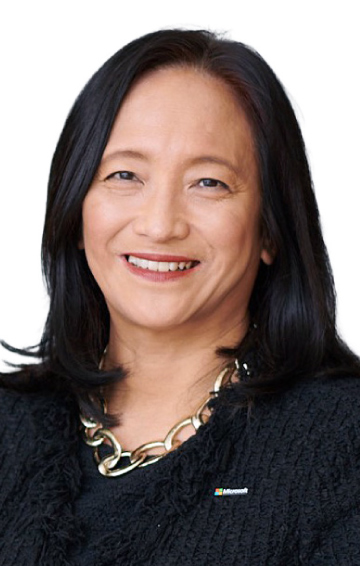

8.25（金）13：35～14：05
生成AIが実現する “AI Business Transformation”
日本マイクロソフト代表取締役 社長
津坂 美樹 氏
今、生成AIが大きな注目を集めています。私たちは、インターネットや、スマートフォンによる、歴史的なテクノロジーシフトを経験して以来の、歴史的な転換点にいます。AIがもつ可能性と、ビジネスへの影響をご紹介しつつ、マイクロソフトがどのようにAIの可能性を最大限に引き出しているか、お客様の導入事例も交えてお話しします。